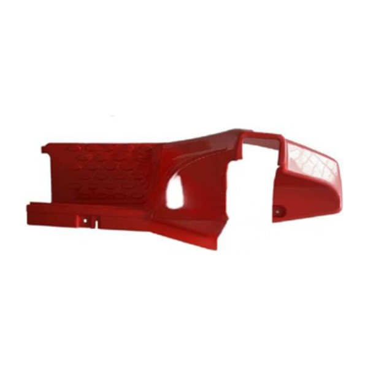

Parts › Cab, Seat Parts & Comfort › 38911-201

Available
Email for a quote
Nichiyu 38911-201 Pedal
| OEM part number | 38911-201 |
| Fits | Nichiyu |
| Models / notes | FB10~18PN-72/75_ (L) |
| Category | Cab, Seat Parts & Comfort |
| Type | Aftermarket replacement |
Send us the quantity you need and we'll reply with pricing, usually within 24 hours. Not the exact part? We can source it. Send the part number or a photo.